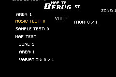
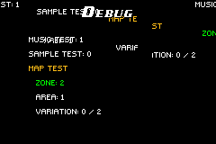
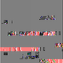

Dragon Ball Z - The Legacy of Goku II (USA)
EEPROM 64K Save Format Mapped (Family Spec) Debug Menu Patch VRAM Tile Sheet 📺 Joybus 💾 MultiBoot
Cartridge Identity
- Game Code
ALFE(FamilyALF)- Header Title
DBZLGCYGOKU2- Maker / Revision
70/ rev0- ROM Size
- 8.0 MiB (8,388,608 B)
- Save Media
EEPROM 64K- SHA-256
6e6c370c339ec9171cb1956adf837a0d342a197f78964882ef46c3086656ff75- Engine / SDK Group
comm-024(9 families)
Debug Menu Re-Enablement Patch (.ips)
Download ALFE-debug.ips (17 B IPS / 4 B delta)
- Hook Mechanism
thumb_bl_redirect· Redirect post-copyright screen constructor call at 0x080001e6 (bl 0x0801d378 -> bl 0x080056b0) to boot directly into interactive DEBUG menu (MUSIC TEST, SAMPLE TEST, MAP TEST, ZONE, AREA, VARIATION)- IPS SHA-256
9306be3a39dd64ac0f033d3b1166c97ff7e7cd55f95f8d4f864696d648e5087f
gbakit patch apply ALFE-debug.ips original.gba patched-debug.gba

Link Cable & Multiplayer Communications
This title contains detected communication capabilities: 📺 Joybus 💾 MultiBoot.
Detailed protocol specifications, SIO registers, Joybus commands, and MultiBoot sequences are documented in the Link & Multiplayer Reference.
- GameCube Joybus
- Register literal
REG_JOY_RECV(0x04000150) at offset0x3f3c78 - Single-Cart MultiBoot
- Single-Cartridge MultiBoot (Download Play) client/server handler · Thumb SWI 0x25 (
0xDF25):0x02e44c,0x06c340,0x07c812,0x22c33c
Battery Save Format Specification (Family Shared)
This release shares its save architecture with canonical family reference Dragon Ball Z - The Legacy of Goku II (Europe) (En,Fr,De,Es,It) (Family
ALF).
Open Family Save Format Spec (ALFP)Download save-format.json
- Canonical Specification
ALFP· 3 mapped fields · 1 verified checksum(s) · Confidence: LOW- gbakit Built-In Support
- Built-in (ALFP)
gbakit save verify ALFP save.sav
gbakit save decode ALFP save.sav
gbakit save fix ALFP damaged.sav -o repaired.savROM Assets, Compression & Audio
- BIOS Compression
- LZ77 (
0x10): 0 streams · RLE (0x30): 0 streams - ROM Pointer Tables
- 543 tables (0 pointing to validated compressed streams)
- SDK Backup Tags
EEPROM_V122- VRAM / Palette Snapshot
- 1,388 non-zero 8×8 tiles · 16 palettes · Direct ROM matches: 0 VRAM blocks, 2 palette blocks

Asset Map (formatkit.asset-map.v1)
Download ALFE-r0-6e6c370c339ec917.asset-map.json.gz (292,817 B (286.0 KiB)) Verified PASS · 3.00% coverage
| Metric | Bytes / Value | Entries |
|---|---|---|
| Identified | 244,407 B (238.7 KiB) (2.91%) | 2,472 |
| Mapped | 0 B (0.00%) | 0 |
| Opaque | 6,856 B (6.7 KiB) (0.08%) | 1 |
| Unknown | 8,137,345 B (7.76 MiB) (97.00%) | 2,415 |
| Total ROM Size | 8,388,608 B (8.00 MiB) | 4,888 |
| Coverage % | 3.00% | — |
| Entries w/ Code Refs | 2,656 / 4,888 (54.34%) | — |
Top Identified Formats: gfx.gba-palette (2,468 · 132,256 B (129.2 KiB)) · compress.bios-huffman (2 · 85,638 B (83.6 KiB)) · compress.bios-rle (1 · 26,321 B (25.7 KiB)) · gba.rom-header (1 · 192 B)
Largest unknown Extents (Headerless / Custom Asset Candidates)
| Offset | Size | Shannon Entropy | Code Refs |
|---|---|---|---|
0x00705AA8 | 1,007,144 B (983.5 KiB) | 7.913 bits/B | 0 |
0x0040DCF0 | 539,972 B (527.3 KiB) | 7.822 bits/B | 0 |
0x0049971C | 289,772 B (283.0 KiB) | 7.830 bits/B | 0 |
0x00209C18 | 206,572 B (201.7 KiB) | 7.579 bits/B | 0 |
0x000AF42C | 205,260 B (200.4 KiB) | 6.663 bits/B | 0 |
gzip -dk ALFE-r0-6e6c370c339ec917.asset-map.json.gz && gbakit map verify rom.gba ALFE-r0-6e6c370c339ec917.asset-map.json
gbakit assets export rom.gba --asset-map ALFE-r0-6e6c370c339ec917.asset-map.json -o out/Text, Fonts & Scene Data
- Primary Text Encoding
- Plain ASCII (uncompressed) (
1,192ASCII strings) - Font & VWF Indicators
- VWF Width Table 1bpp Font · BIOS SWIs: BitUnPack
0x10:11· LZ770x11/12:11· Huffman0x13:10· RLE0x14/15:14 - Scene & Packaging
69ROM pointer tables (≥32 entries,3≥200) ·6relativeu32TOCs ·78OAM metasprite hits
Hardware MMIO Subsystems
ppu_display0x8005f1a,0x8006274,0x8020d40save_bus_sram_flash0x800c390